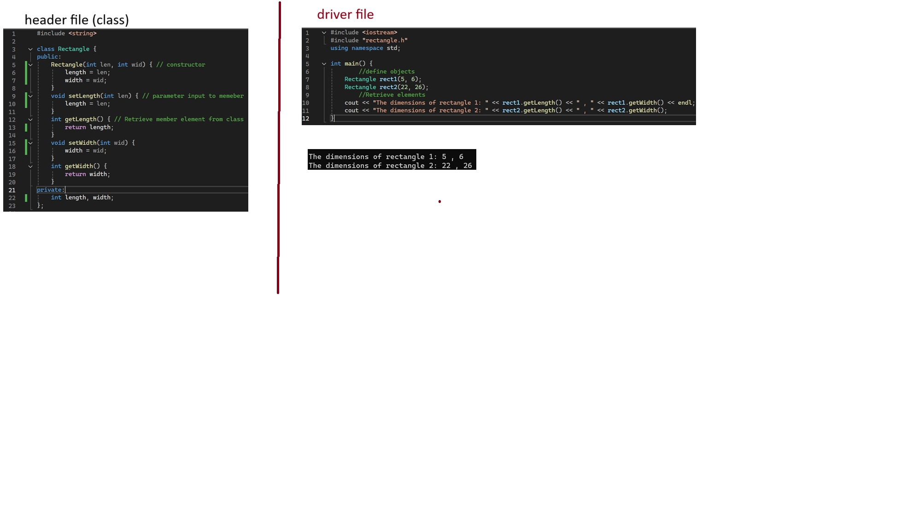
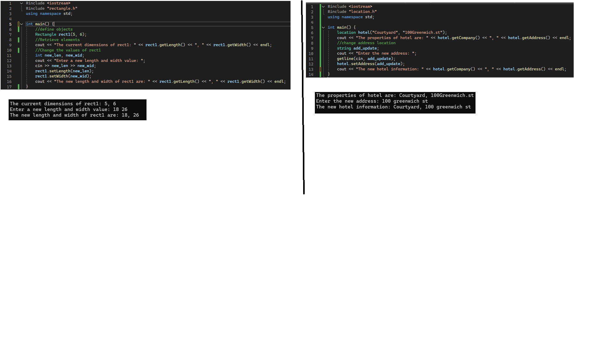
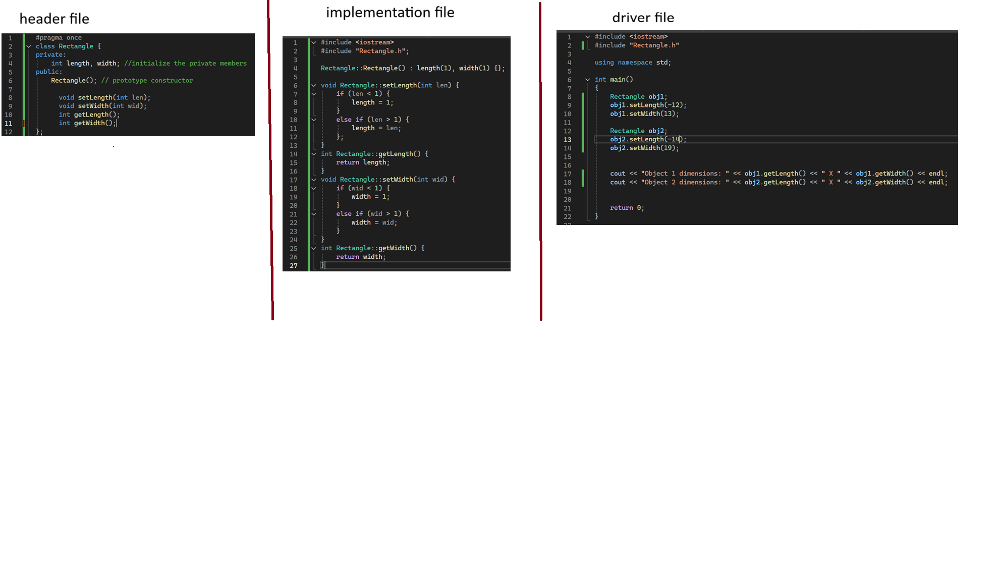
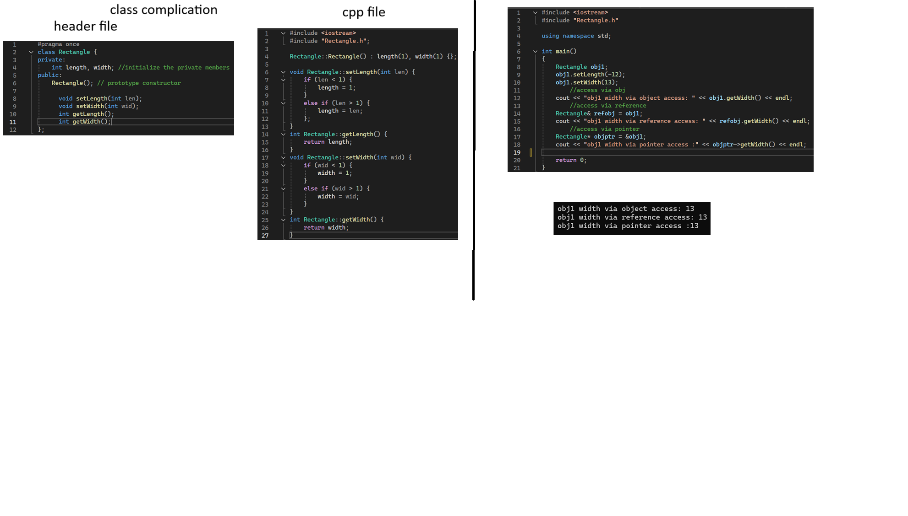
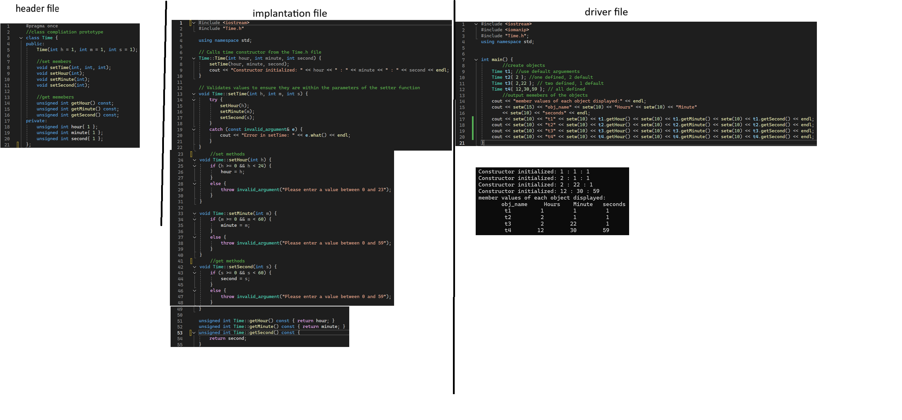
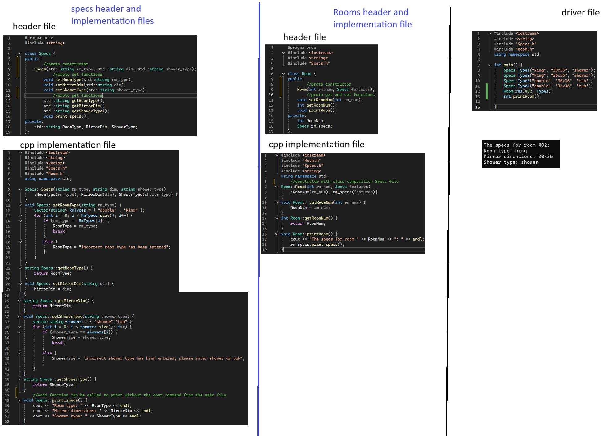
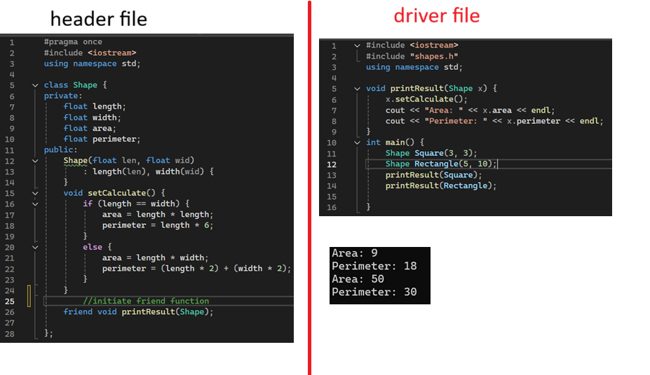
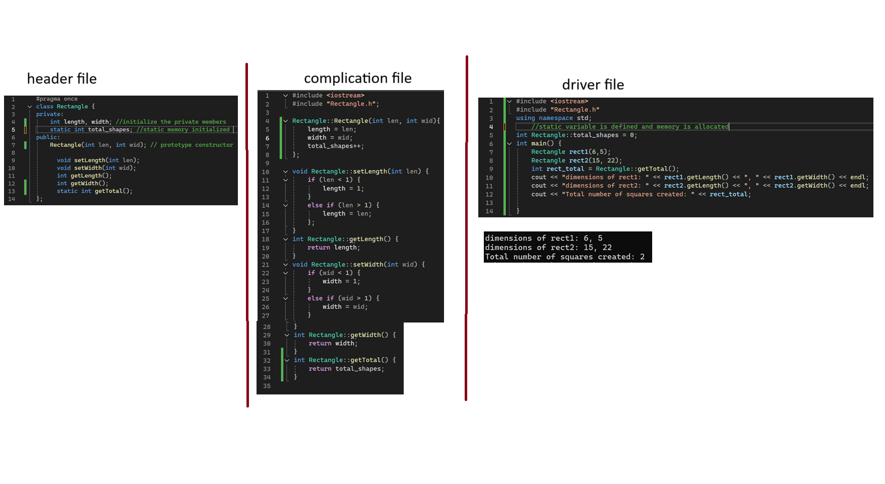
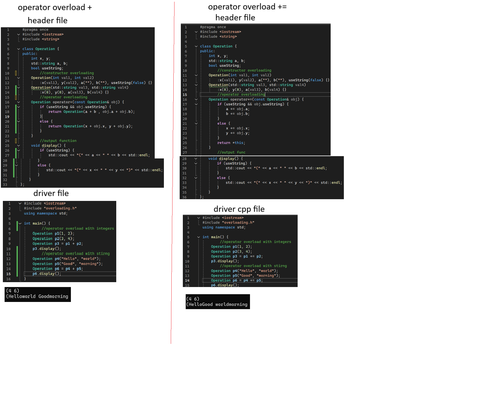

Basic class creation and execution

using getter and setter

Seperation of header and implementation

object access via object, reference, and pointer

constructor with default arguments

class composition : class relationship

Creation of friend function

class static members

operator overloading
